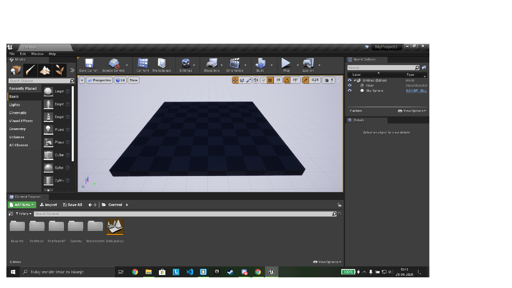
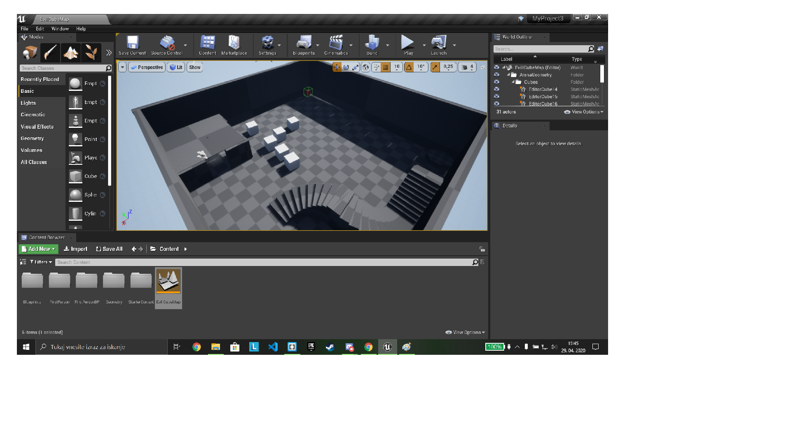
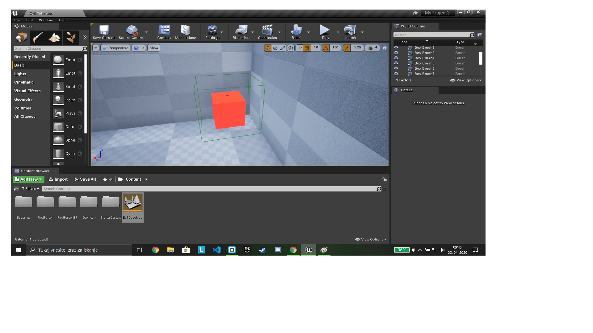

PREDSTAVITEV NOVE RAČUNALNIŠKE IGRICE AN EVIL CUBE!!!
NASTANEK
Igra je narejena v Unreal Engine.
The Unreal Engine je igra, ki jo je razvil Epic Games, prvič predstavljena leta 1998 v first-person shooter game Unreal. Čeprav je bil sprva razvit za strelce prve osebe, se uspešno uporablja v številnih drugih zvrsteh, vključno z platformerji, borbenimi igrami, MMORPG-ji in drugimi RPG-ji.

Unreal Engine, napisan v jeziku C ++ , ima visoko stopnjo prenosljivosti in podpira širok nabor platform.Najnovejša različica je Unreal Engine 4, ki je bil izdan leta 2014 po naročniškem modelu. Od leta 2015 jo je mogoče prenesti brezplačno.
O IGRI:
Igra je prvoosebna strelska. Cilj igre je uničiti vse rdeče kocke, ki se ti približujejo. Ko jih zadaneš eksplodirajo. Nova kocka se pojavi vsake pol sekunde.
POSTOPEK IZDELAVE:
Najprej postavimo ploščo na kateri bo potekala igra in sicer tako da naredimo nov projekt, ga shranimo in na prazno območe postavimo kocko, ki jo raztegnamo da nastane plošča.

Nato nastavimo svetlobo in ozadje. To naredimo tako, da gremo v zavihek luči in postavimo znak sonca, nato pa še določimo smer žarkov. Pri ozadju pa imamo dve možnosti (sončno ali oblačno).
Potem oblikujemo igralno polje (postavimo objekte) kot so stopnice, kocke, žoge, krogle, žarnice (da povečamo svetlobo), valji, stožci...

Nato sprogramiramo kocko, da napada igralca. V Unreal Engine za programiranje ni potrebno pisati kod ampak povezuješ različna okenca, ki imajo vsako svoj namen (naprimer: povežemo okence z hitrostjo kocke in okence z časom pojavljanja kocke).

Na koncu pa na igralno polje postavimo še kocko, ki smo jo pred tem sprogramirali in nastavimo mesto na katerem igralec začne igro.

Če želite pa lahko dodate še nove stopnje in različne težavnosti.